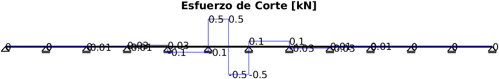

Contents
Memoria de cálculo: Estructura de techo
Cubierta aislada polideportivo FECHA: 16/12/2022 CALCULISTA: ING. OSCAR CANAVESIO SOLICITANTE: Sociedad Rural Corrientes
1.- Consideraciones generales
En la presente memoria de cálculo se emplearán los siguientes lineamientos:
- Para la determinación de las cargas de viento, se emplearán el Reglamento argentino de acción del viento sobre las construcciones CIRSOC 102 (edición de Julio 2005) y los Comentarios al reglamento argentino de acción del viento sobre las construcciones CIRSOC 102 (edición de Julio 2005).
- Con respecto a la verificación de la estructura principal y secundaria, de chapa plegada, tanto como correas y vigas cajón, el procedimiento de cálculo será basado por la recomendación al CIRSOC 302 (Edición de Noviembre de 2001).
- Para el dimensionamiento de los elementos de hormigón armado será empleado el reglamento CIRSOC 201.
2.- Datos generales de la estructura
Se adjunta al presente informe la planta de estructura.
Lado Mayor L: 60.00m. Lado Menor B: 30.00m. Altura de cabeza de columna h: 3.50m. Pendiente: 12.41º Ubicación: ?UBICACION. Destino: ?DESTINO.
3.- Determinación de las cargas de viento
3.1.- Determinación de la Presión Dinámica (CIRSOC 102-2005, Art. 5.10)
q = 0.613 · kz · kzt · kd · I · v²
Características de la estructura según reglamento:
Exposición: B. Factor topográfico: Kzt = 1.00. Factor de direccionalidad. Kd = 0.85. Factor de Importancia: I = 1. Velocidad básica de viento: v = 46.00 [m/s]. Tipo de edificio: Aislado Relación de bloqueo ζ = 0.10 Coeficiente de exposición para la presión dinámica en función de la altura de la estructura (Art. 5.6.4.):
|| Z[m] | Kz | q[N/m²]|| || 3.50 | 0.59 | 649.94 || || 4.89 | 0.59 | 649.94 || || 6.28 | 0.63 | 693.65 || || 7.67 | 0.67 | 734.42 || || 5.58 | 0.61 | 670.79 ||
Tabla 1: Factores Kz y presión qz.
Donde la última fila corresponde a la altura media de la cubierta, la cual definirá la presión qh.
3.2.- Determinación de las presiones de diseño.
Su determinación para cubiertas aisladas está definida por el Anexo I del reglamento el cual establece la siguiente expresión:
p = qh · G · Cpn [N/m2]
qh presión dinámica evaluada a la altura media de cubierta, h ;
G el factor de efecto de ráfaga según el artículo 5.8.;
Cpn el coeficiente de presión neta, Tablas I.1, I.2 e I.3;
Presión dinámica para la altura media qh = 670.79 Factor de efecto ráfaga G = 0.85 || Caso de | Coeficientes || || Carga | Globales || || Máx. p/todo ζ | 0.40 || || Mín. p/ζ=0.10 | -0.79 ||
Tabla 2: Coeficientes Cpn.
|| Caso de | Presiones || || Carga | Globales [N/m²] || || Máx. p/todo ζ | 228.07 || || Mín. p/ζ=0.10 | -452.34 ||
Tabla 3: Presiones resultantes.
4.- Análisis de cargas
De acuerdo con el artículo A.4.3 del CIRSOC 303-2009 la resistencia requerida de la estructura y de sus distintos componentes estructurales se determinará a partir de la combinación de acciones mayoradas más desfavorables. Se tendrá en cuenta que muchas veces la mayor resistencia requerida resulta de una combinación en que una o más acciones no están actuando.
1.2·D + 1.6·Lr + 0.8·W (A.4.3-3) 1.2·D + 1.6·W + f1·Lr (A.4.3-4) (1) 1.20·D + 0.80·W (A.4.3-6) (2)
(1) f1 = 0,5 para otras configuraciones de cargas según el artículo A.4.3 del CIRSOC 303-2009.
(2) Se podrá usar 1,5 como factor de carga para viento (W) cuando se consideren las velocidades básicas de viento V del reglamento CIRSOC 102-2005.
Analizando la combinación de cargas de la expresión (A.4.3-3), que tiene en cuenta una sobrecarga de uso por montaje o reparaciones más la carga de viento obtenida en función de una ráfaga de viento de 50 años de recurrencia, se llega a la conclusión de su poca probabilidad de ocurrencia y a fin de maximizar la eficiencia de la estructura se considera como carga de diseño a la determinada por la expresión (A.4.3-6).
Se procederá a la alineación de las cargas sobre las correas cuya separación es:
SepCorreas = 1.46m
Se considera la presión global del viento sobre la estructura.
4.1.- Determinación de D:
Peso Propio de cubiertas de chapas:
PPcub = 40.00N/m²·1.46m = 58.33N/m
Peso Propio de correas:
PPcorr = 37.19N/m
Peso total:
D = 95.51N/m
4.2.- Determinación de W actuante en las correas:
Succión:
W = -380.67N/m
Presión:
W = 454.30N/m
Por lo tanto, las cargas de diseño para las correas serán dos. Para el caso predominante de succión:
qSuc = -189.92N/m
Para el caso predominante de presión:
qPre = 478.06N/m
5- Solicitaciones en las correas.
Se presentan a continuación las solicitaciones para el caso de carga concentrada y un caso de solicitación por carga de viento.
5.1.- Carga Puntual en tramo exterior.

5.2.- Carga Puntual en tramo interior.

5.3.- Carga de viento en correas (Succión).
5.4.- Carga de viento en correas (Presión).
6.- Dimensionamiento y verificación de las correas de la estructura
Se procede a la verificación de un perfil abierto C según los requerimientos establecidos por la norma CIRSOC 303-2009 para la resistencia a la flexión y a corte para las solicitaciones de la carga de diseño y la resistencia de diseño a carga concentrada.

Fig: Esquema del perfil adoptado para correas.
Perfil C-120-50-15-2
Propiedades del perfil:
B = 50.0mm t = 2.00mm R = 3.00mm Ht = 120.00mm A = 4.74cm² Ixx = 105.83cm⁴ Iyy = 15.94cm⁴ rx = 4.73cm ry = 1.83cm Cw = 496.23cm⁶ J = 0.06cm⁴ x0 = -3.79cm r0 = 6.33cm
1) Verificación de la relación de esbeltez
Elemento 1 - Alma:
h/t = 56 < 500 B.C.
Elemento 2 - Ala:
d/t = 21 < 60 B.C.
Elemento 3 - Labio:
b1/t = 5.50 < 60 B.C.
2) Verificación de la efectividad de la sección
En función de los Arts. B.2.1, B.3.1 y B.4.2 se determina lo siguiente con respecto a la efectividad de la sección del perfil:
El área del perfil A = 4.74cm² es totalmente efectiva.
3) Resistencia de diseño a la flexión.
a) Resistencia nominal por viga lateral arriostrada en forma continua sección totalmente efectiva y con sección transversal simétrica respecto al eje de flexión. (Art. C.3.1.1)
Md = Mn·Ø = 3937.78kNm > Mmáx = 2239.36kNm B.C.
b) Resistencia al pandeo lateral torsional. (Art. C.3.1.1): Se adoptan arriostramientos a los tercios de la luz.
Md = Øb·Mn = 0.9·Sc·Fc·0.001 = 3010.97kNm > Mmáx = 1876.41kNm B.C.
Aclaración: Para la resistencia al Pandeo Lateral Torsional se tomó a la correa como arriostrada (inferiormente) en los tercios de la luz. Además se realizó una reducción del Mmáx de trabajo, al considerar una corrección por cargas no aplicadas en el centro de corte de la sección (Ver 'Estructuras de Acero, Parte II - Gabriel Troglia' Ej.n°9, Pág. 77.)
4) Resistencia de Diseño al corte. (Art. C.3.2.1)
Vd = Øv·Vn = 0.95·Aw·Fv·0.01 = 30004.80kN > Vmáx = 1375.77kN B.C.
5) Resistencia de diseño al pandeo localizado en el alma.
Se realiza el siguiente análisis para cargas concentradas de uso de 1Kn para almas sin perforaciones (Art. C.3.4.1.)
a) Reacción en el apoyo
El ala se encuentra unida al apoyo y se considera una longitud de apoyo igual a 4cm, y la distancia entre el borde del apoyo al extremo de la barra igual a 1,5h = 16,8cm.
Pd = ØN·PN = 5995.48kN > 2575.85kN B.C.
6) Verificación de las deformaciones en estado de servicio. (Art. A.4.4.)
Se verifica con carga de servicio:
fx = 0.01cm < 0.02cm = fmáx = L/250 B.C.
7.- Cálculo de las solicitaciones de los elementos de la cercha y las columnas.
Esquema de estructura con cargas aplicadas, correspondientes al estado 1 debido a Viento.
||Barra | Perfil | Long.[m] |Comp.Máx.[N]|Trac.Máx[N]|| || S01 | U-170-60-0-4.75 | 1.46 | -41877 | 0 || || S02 | U-170-60-0-4.75 | 1.46 | -51536 | 0 || || S03 | U-170-60-0-4.75 | 1.46 | -57760 | 0 || || S04 | U-170-60-0-4.75 | 1.46 | -60205 | 0 || || S05 | U-170-60-0-4.75 | 1.46 | -58905 | 0 || || S06 | U-170-60-0-4.75 | 1.46 | -53856 | 0 || || S07 | U-170-60-0-4.75 | 1.46 | -45062 | 0 || || S08 | U-170-60-0-4.75 | 1.46 | -32515 | 0 || || S09 | U-170-60-0-4.75 | 1.46 | -16217 | 0 || || S10 | U-170-60-0-4.75 | 1.46 | 0 | 3587 || ||Barra | Perfil | Long.[m] |Comp.Máx.[N]|Trac.Máx[N]|| || S11 | U-170-60-0-4.75 | 1.20 | -16623 | 0 || || S12 | U-170-60-0-4.75 | 1.46 | -42001 | 0 || || S13 | U-170-60-0-4.75 | 1.46 | -52017 | 0 || || S14 | U-170-60-0-4.75 | 1.46 | -58592 | 0 || || S15 | U-170-60-0-4.75 | 1.46 | -61390 | 0 || || S16 | U-170-60-0-4.75 | 1.46 | -60442 | 0 || || S17 | U-170-60-0-4.75 | 1.46 | -55746 | 0 || || S18 | U-170-60-0-4.75 | 1.46 | -47304 | 0 || || S19 | U-170-60-0-4.75 | 1.46 | -35110 | 0 || || S20 | U-170-60-0-4.75 | 1.46 | -19163 | 0 || ||Barra | Perfil | Long.[m] |Comp.Máx.[N]|Trac.Máx[N]|| || S21 | U-170-60-0-4.75 | 1.46 | -3078 | 0 || || S22 | U-170-60-0-4.75 | 1.20 | -20399 | 0 || || I23 | U-170-60-0-4.75 | 1.04 | -2335 | 0 || || I24 | U-170-60-0-4.75 | 1.46 | -4137 | 0 || || I25 | U-170-60-0-4.75 | 1.46 | -10260 | 0 || || I26 | U-170-60-0-4.75 | 1.46 | -13805 | 0 || || I27 | U-170-60-0-4.75 | 1.46 | -14822 | 0 || || I28 | U-170-60-0-4.75 | 1.46 | -13299 | 0 || || I29 | U-170-60-0-4.75 | 1.46 | -9238 | 0 || || I30 | U-170-60-0-4.75 | 1.46 | -2636 | 0 || ||Barra | Perfil | Long.[m] |Comp.Máx.[N]|Trac.Máx[N]|| || I31 | U-170-60-0-4.75 | 1.46 | -15506 | 0 || || I32 | U-170-60-0-4.75 | 1.46 | -34114 | 0 || || I33 | U-170-60-0-4.75 | 1.46 | -54927 | 0 || || I34 | U-170-60-0-4.75 | 0.48 | -48706 | 0 || || I35 | U-170-60-0-4.75 | 1.46 | -3785 | 0 || || I36 | U-170-60-0-4.75 | 1.46 | -9554 | 0 || || I37 | U-170-60-0-4.75 | 1.46 | -12748 | 0 || || I38 | U-170-60-0-4.75 | 1.46 | -13412 | 0 || || I39 | U-170-60-0-4.75 | 1.46 | -11537 | 0 || || I40 | U-170-60-0-4.75 | 1.46 | -7124 | 0 || ||Barra | Perfil | Long.[m] |Comp.Máx.[N]|Trac.Máx[N]|| || I41 | U-170-60-0-4.75 | 1.46 | -169 | 0 || || I42 | U-170-60-0-4.75 | 1.46 | -12690 | 0 || || I43 | U-170-60-0-4.75 | 1.46 | -30922 | 0 || || I44 | U-170-60-0-4.75 | 1.46 | -51535 | 0 || || I45 | U-170-60-0-4.75 | 0.48 | -47644 | 0 || || D46 | C-160-60-15-2 | 1.16 | -5281 | 0 || || D47 | C-160-60-15-2 | 1.16 | -4342 | 0 || || D48 | C-160-60-15-2 | 1.16 | -2418 | 0 || || D49 | C-160-60-15-2 | 1.16 | -469 | 0 || || D50 | C-160-60-15-2 | 1.16 | -2681 | 0 || ||Barra | Perfil | Long.[m] |Comp.Máx.[N]|Trac.Máx[N]|| || D51 | C-160-60-15-2 | 1.16 | -5565 | 0 || || D52 | C-160-60-15-2 | 1.16 | -8448 | 0 || || D53 | C-160-60-15-2 | 1.16 | -11324 | 0 || || D54 | C-160-60-15-2 | 1.16 | -14305 | 0 || || D55 | C-160-60-15-2 | 1.16 | -16309 | 0 || || D56 | C-160-60-15-2 | 1.16 | -25086 | 0 || || D57 | C-160-60-15-2 | 0.80 | -17609 | 0 || || D58 | C-160-60-15-2 | 1.16 | -8598 | 0 || || D59 | C-160-60-15-2 | 1.16 | -6226 | 0 || || D60 | C-160-60-15-2 | 1.16 | -3276 | 0 || ||Barra | Perfil | Long.[m] |Comp.Máx.[N]|Trac.Máx[N]|| || D61 | C-160-60-15-2 | 1.16 | -404 | 0 || || D62 | C-160-60-15-2 | 1.16 | -931 | 0 || || D63 | C-160-60-15-2 | 1.16 | -2884 | 0 || || D64 | C-160-60-15-2 | 1.16 | -4842 | 0 || || D65 | C-160-60-15-2 | 1.16 | -6769 | 0 || || D66 | C-160-60-15-2 | 1.16 | -8854 | 0 || || D67 | C-160-60-15-2 | 1.16 | -10311 | 0 || || D68 | C-160-60-15-2 | 1.01 | -30797 | 0 || || D69 | C-160-60-15-2 | 1.16 | -5024 | 0 || || D70 | C-160-60-15-2 | 1.16 | -4069 | 0 || ||Barra | Perfil | Long.[m] |Comp.Máx.[N]|Trac.Máx[N]|| || D71 | C-160-60-15-2 | 1.16 | -2147 | 0 || || D72 | C-160-60-15-2 | 1.16 | -198 | 0 || || D73 | C-160-60-15-2 | 1.16 | -2410 | 0 || || D74 | C-160-60-15-2 | 1.16 | -5293 | 0 || || D75 | C-160-60-15-2 | 1.16 | -8177 | 0 || || D76 | C-160-60-15-2 | 1.16 | -11053 | 0 || || D77 | C-160-60-15-2 | 1.16 | -14028 | 0 || || D78 | C-160-60-15-2 | 1.16 | -16101 | 0 || || D79 | C-160-60-15-2 | 1.16 | -24315 | 0 || || D80 | C-160-60-15-2 | 0.80 | -22017 | 0 || ||Barra | Perfil | Long.[m] |Comp.Máx.[N]|Trac.Máx[N]|| || D81 | C-160-60-15-2 | 1.16 | -8872 | 0 || || D82 | C-160-60-15-2 | 1.16 | -6496 | 0 || || D83 | C-160-60-15-2 | 1.16 | -3547 | 0 || || D84 | C-160-60-15-2 | 1.16 | -675 | 0 || || D85 | C-160-60-15-2 | 1.16 | -1202 | 0 || || D86 | C-160-60-15-2 | 1.16 | -3155 | 0 || || D87 | C-160-60-15-2 | 1.16 | -5113 | 0 || || D88 | C-160-60-15-2 | 1.16 | -7035 | 0 || || D89 | C-160-60-15-2 | 1.16 | -9151 | 0 || || D90 | C-160-60-15-2 | 1.16 | -10448 | 0 || ||Barra | Perfil | Long.[m] |Comp.Máx.[N]|Trac.Máx[N]|| || D91 | C-160-60-15-2 | 1.01 | -26473 | 0 || || C92 | H21 | 3.50 | -25838 | 0 || || C93 | H21 | 3.50 | -25610 | 0 || ||Barra | Perfil | Long.[m] |Comp.Máx.[N]|Trac.Máx[N]||
Tabla 3: se detallan los elementos que conforman la cercha con los perfiles adoptados para cada caso. También se detallan los máximos esfuerzos en cada cordón, con los cuales serán verificados.
Nota: Los casos nulos en la tabla anterior corresponden a barras que no presentaron esfuerzos de tracción o compresión, según corresponda.
8.- Dimensionamiento de la cercha
8.1.- Verificación del cordón superior.
Se procede a la verificación del perfil adoptado según los requerimientos establecidos por la norma CIRSOC 303-2009 para la resistencia a la compresión axil.
Fig: Esquema del perfil adoptado para el cordón superior.
Propiedades del perfil:
B = 60.0mm t = 4.75mm R = 7.12mm Ht = 170.00mm A = 13.03cm² Ixx = 532.08cm⁴ Iyy = 41.43cm⁴ rx = 6.39cm ry = 1.78cm Cw = 2037.51cm⁶ J = 0.98cm⁴ x0 = -3.16cm r0 = 7.35cm
1) Verificación de la relación de esbeltez
Elemento 1 - Alma:
h/t = 32 < 500 B.C.
Elemento 2 - Ala:
d/t = 11 < 60 B.C.
Elemento 3 - Labio:
No corresponde.
2) Verificación de la efectividad de la sección
En función de los Arts. B.2.1, B.3.1 y B.4.2 se determina lo siguiente con respecto a la efectividad de la sección del perfil:
El área del perfil A = 13.03cm² es totalmente efectiva.
3) Verificación a la compresión:
• Articulo C.4: Este artículo se aplica a barras en las cuales la resultante de todas las cargas actuantes es una carga axial a lo largo del eje del baricentro de la sección efectiva calculada para la tensión Fn (MPa).
Pd = Øc·Fn·Ae·0.1 = 0.85·188·13.03·0.1 = 207.73kN > 61.39kN B.C.
4) Verificación a la tracción:
Según el artículo C.2, para barras solicitadas a tracción, la resistencia nominal a tracción, Td, en kN deberá ser el menor valor obtenido de los estados límites de (a) fluencia en la sección bruta, (b) rotura en la sección neta fuera de las uniones y (c) rotura en la sección neta efectiva en la unión.
En el presente análisis se analiza los primeros dos casos, dejando a lo último las verificaciones de las uniones. Al no presentar uniones por bulones, la sección bruta es igual a la sección neta efectiva.
(a) Fluencia en la sección bruta (Art. C.2-1)
Td = Øt·Ag·Fy·0.1 = 0.9·235·13.03·0.1 = 275.65kN > 41.03kN B.C.
(b) Rotura en la sección neta (Art. C.2-2)
Td = Øt·An·Fu·0.1 = 0.75·13.03·310.00·0.1 = 303.02kN > 41.03kN B.C.
8.2.- Verificación del cordón inferior.
Se procede a la verificación del perfil adoptado según los requerimientos establecidos por la norma CIRSOC 303-2009 para la resistencia a la compresión axil.

Fig: Esquema del perfil adoptado para cordón inferior.
Propiedades del perfil:
B = 60.0mm t = 4.75mm R = 7.12mm Ht = 170.00mm A = 13.03cm² Ixx = 532.08cm⁴ Iyy = 41.43cm⁴ rx = 6.39cm ry = 1.78cm Cw = 2037.51cm⁶ J = 0.98cm⁴ x0 = -3.16cm r0 = 7.35cm
1) Verificación de la relación de esbeltez
Elemento 1 - Alma:
h/t = 32 < 500 B.C.
Elemento 2 - Ala:
d/t = 11 < 60 B.C.
Elemento 3 - Labio:
No corresponde.
2) Verificación de la efectividad de la sección
En función de los Arts. B.2.1, B.3.1 y B.4.2 se determina lo siguiente con respecto a la efectividad de la sección del perfil:
El área del perfil A = 13.03cm² es totalmente efectiva.
3) Verificación a la compresión:
• Articulo C.4: Este artículo se aplica a barras en las cuales la resultante de todas las cargas actuantes es una carga axial a lo largo del eje del baricentro de la sección efectiva calculada para la tensión Fn (MPa).
Pd = Øc·Fn·Ae·0.1 = 0.85·188·13.03·0.1 = 207.73kN > 54.93kN B.C.
4) Verificación a la tracción:
Según el artículo C.2, para barras solicitadas a tracción, la resistencia nominal a tracción, Td, en kN deberá ser el menor valor obtenido de los estados límites de (a) fluencia en la sección bruta, (b) rotura en la sección neta fuera de las uniones y (c) rotura en la sección neta efectiva en la unión.
En el presente análisis se analiza los primeros dos casos, dejando a lo último las verificaciones de las uniones. Al no presentar uniones por bulones, la sección bruta es igual a la sección neta efectiva.
(a) Fluencia en la sección bruta (Art. C.2-1)
Td = Øt·Ag·Fy·0.1 = 0.9·13·235.00·0.1 = 275.65kN > 35.12kN B.C.
(b) Rotura en la sección neta (Art. C.2-2)
Td = Øt·An·Fu·0.1 = 0.75·13.03·310.00·0.1 = 303.02kN > 35.12kN B.C.
8.3.- Verificación de las diagonales.
Se procede a la verificación del perfil adoptado según los requerimientos establecidos por la norma CIRSOC 303-2009 para la resistencia a la compresión axil.

Fig: Esquema del perfil adoptado para las diagonales.
Propiedades del perfil:
B = 60.0mm t = 2.00mm R = 3.00mm Ht = 160.00mm A = 5.94cm² Ixx = 233.19cm⁴ Iyy = 27.31cm⁴ rx = 6.27cm ry = 2.14cm Cw = 1413.48cm⁶ J = 0.08cm⁴ x0 = -4.22cm r0 = 7.85cm
1) Verificación de la relación de esbeltez
Elemento 1 - Alma:
h/t = 76 < 500 B.C.
Elemento 2 - Ala:
d/t = 26 < 60 B.C.
Elemento 3 - Labio:
b1/t = 5.50 < 60 B.C.
2) Verificación de la efectividad de la sección
En función de los Arts. B.2.1, B.3.1 y B.4.2 se determina lo siguiente con respecto a la efectividad de la sección del perfil:
El área del perfil A = 5.94cm² es totalmente efectiva.
3) Verificación a la compresión:
• Articulo C.4: Este artículo se aplica a barras en las cuales la resultante de todas las cargas actuantes es una carga axial a lo largo del eje del baricentro de la sección efectiva calculada para la tensión Fn (MPa).
Pd = Øc·Fn·Ae·0.1 = 0.85·195·4.90·0.1 = 81.32kN > 16.31kN B.C.
4) Verificación a la tracción:
Según el artículo C.2, para barras solicitadas a tracción, la resistencia nominal a tracción, Td, en kN deberá ser el menor valor obtenido de los estados límites de (a) fluencia en la sección bruta, (b) rotura en la sección neta fuera de las uniones y (c) rotura en la sección neta efectiva en la unión.
En el presente análisis se analiza los primeros dos casos, dejando a lo último las verificaciones de las uniones. Al no presentar uniones por bulones, la sección bruta es igual a la sección neta efectiva.
(a) Fluencia en la sección bruta (Art. C.2-1)
Td = Øt·Ag·Fy·0.1 = 0.9·6·235.00·0.1 = 125.57kN > 16.19kN B.C.
(b) Rotura en la sección neta (Art. C.2-2)
Td = Øt·An·Fu·0.1 = 0.75·5.94·310.00·0.1 = 138.04kN > 16.19kN B.C.
8.4.- Verificación de las barras de apoyos de la cercha.
Se procede a la verificación del perfil adoptado según los requerimientos establecidos por la norma CIRSOC 303-2009 para la resistencia a la compresión axil.
Fig: Esquema del perfil adoptado para barras de apoyo de la cercha.
Propiedades del perfil:
B = 60.0mm t = 2.00mm R = 3.00mm Ht = 160.00mm A = 5.94cm² Ixx = 233.19cm⁴ Iyy = 27.31cm⁴ rx = 6.27cm ry = 2.14cm Cw = 1413.48cm⁶ J = 0.08cm⁴ x0 = -4.22cm r0 = 7.85cm
1) Verificación de la relación de esbeltez
Elemento 1 - Alma:
h/t = 76 < 500 B.C.
Elemento 2 - Ala:
d/t = 26 < 60 B.C.
Elemento 3 - Labio:
b1/t = 5.50 < 60 B.C.
2) Verificación de la efectividad de la sección
En función de los Arts. B.2.1, B.3.1 y B.4.2 se determina lo siguiente con respecto a la efectividad de la sección del perfil:
El área del perfil A = 5.94cm² es totalmente efectiva.
3) Verificación a la compresión:
• Articulo C.4: Este artículo se aplica a barras en las cuales la resultante de todas las cargas actuantes es una carga axial a lo largo del eje del baricentro de la sección efectiva calculada para la tensión Fn (MPa).
Pd = Øc·Fn·Ae·0.1 = 0.85·195·4.90·0.1 = 81.32kN > 30.80kN B.C.
4) Verificación a la tracción:
Según el artículo C.2, para barras solicitadas a tracción, la resistencia nominal a tracción, Td, en kN deberá ser el menor valor obtenido de los estados límites de (a) fluencia en la sección bruta, (b) rotura en la sección neta fuera de las uniones y (c) rotura en la sección neta efectiva en la unión.
En el presente análisis se analiza los primeros dos casos, dejando a lo último las verificaciones de las uniones. Al no presentar uniones por bulones, la sección bruta es igual a la sección neta efectiva.
(a) Fluencia en la sección bruta (Art. C.2-1)
Td = Øt·Ag·Fy·0.1 = 0.9·6·235.00·0.1 = 125.57kN > 31.29kN B.C.
(b) Rotura en la sección neta (Art. C.2-2)
Td = Øt·An·Fu·0.1 = 0.75·5.94·310.00·0.1 = 138.04kN > 31.29kN B.C.
9.- Dimensionamiento de las columnas.
Según el artículo 10.8 del CIRSOC el lado mínimo de una columna debe ser mayor a 200mm y el diámetro de las barras no menor a 12mm.
9.1.- Predimensionamiento.
Dimensiones de la columna:
Lado menor: bc = 24cm Lado mayor: ac = 48cm Ag = 48cm·24cm = 1152cm²
Además, se considera un recubrimiento de 3cm.
Armadura adoptada: El acero es de tipo 420.
Armadura principal por cara: Ast = 5Ø16 = 10.05cm² Armadura de corte: Ae = 1 Ø6c/10cm
9.2.- Verificaciones.
La armadura mínima es:
MALAS CONDICIONES: Se debe redimensionar la armadura a flexión, ya que no cumple con la cuantía mínima.?
La armadura mínima por retracción y fragüe:
Asmín = 0.0018·bc·ac = 0.0018·24cm·48 = 2.07cm² < Ast = 10.05cm² B.C.
La armadura por flexión:
Warning: *** La armadura de flexión adoptada NO
VERIFICA. Se recomienda redimensionar.
La armadura de corte adoptada verifica
Para la determinación de la armadura de flexión:
kh = 6.98, por lo tanto: ks = 0.48. MALAS CONDICIONES: Se debe redimensionar la armadura de flexión. ?
La armadura por corte:
Tau = 4.27kg/cm²; por lo tanto: Zona de Corte: 1; y la Tensión de Corte: 1.71kg/cm² TensCorte = 1.71kg/cm² < Ase = 5.65kg/cm² B.C.
10.- Determinación del momento estabilizador de la fundación por el método de SULZBERGER
El método se basa en un postulado que establece que para inclinaciones límites del conjunto soporte (fundación) en un ángulo “α” respecto de la vertical, tal que “tg(α)≤0,01”, el terreno se comportará de forma elástica. De esta forma se obtiene además de una reacción en el fondo de la fundación, una reacción de las paredes verticales, ambas definirán un momento estabilizador que se opondrá al momento de vuelco provocado por las cargas exteriores. Por esta razón, se adopta una inclinación del conjunto fundación-soporte tal que tg(α)=0,01, pretendiendo aprovechar al máximo el comportamiento elástico del suelo.
10.1.- Características del suelo.
σadm = 110kN/m² (1.1kg/cm²) ?
C = 100000kN/m³ (10kg/cm³)
Coeficiente de fricción entre el terreno y el hormigón:
μ = 0.4
Tangente del ángulo de giro α permitido de la base:
tg(α) = 0.01
Mínima relación entre los momentos dados por Sulzberguer y el momento de volcamiento:
Gamma = 1.50
10.2.- Características de los elementos estructurales.
Profundidad de fundación:
H = 1.80m
Altura de la base de hormigón:
t = 1.80m
Lados de la base de hormigón, normal y paralelo a la cumbrera, respectivamente:
af = 0.90m; bf = 0.90m
10.3.- Determinación del momento estabilizante.
El momento estabilizante Me producido por la fundación está conformado por dos momentos:
- Momento de empotramiento Ms debido a las reacciones de las paredes verticales de la fundación y a la fricción entre el suelo y el hormigón.
- Momento de reacción de fondo Mb debido a la reacción de fondo de la fundación, provocado por las cargas verticales actuantes.
Cálculo de Ms: El método de Sulzberger acepta que la profundidad de entrada del bloque dentro del terreno depende de la resistencia específica o “presión admisible del suelo” contra la presión externa en el lugar considerado. Esta presión es igual a la profundidad multiplicada por el índice de compresibilidad C.
σ = C.λ
Donde λ es la deformación del suelo producida por la fuerza externa y C esta expresado en kN/m³.
Considerando que la fricción en el fondo de la excavación actúa en su valor total, el eje de giro del bloque se ubica en la base del mismo. Una inclinación con ángulo α corresponde a un movimiento transversal de la superficie “bf.dy” igual a “y.tg(α)”, donde “bf” es la dimensión del bloque normal a la fuerza F, mientras que “y” es la distancia entre la superficie mencionada y la base del bloque. Siendo Cy el índice de compresibilidad del terreno en la profundidad considerada, la presión unitaria será igual a:
σy = Cy·y·tg(α)
Expresión similar a la escrita anteriormente. La fuerza de reacción de la pared de excavación será:
dFy =Cy·y·tg(α)·b·dy
El momento respecto al eje de giro en la base será:
dMs = Cy·b·dy·y²·tg(α)
Donde “Cy·b·dy·y²” representa el momento de inercia de la superficie de carga “Cy·b·dy” con respecto al eje de giro. Entonces se puede escribir como:
dMs = dI·tg(α)
El índice C es una función lineal de la profundidad, por lo que se puede decir que la superficie total de carga tiene la forma de un triángulo isósceles con la base igual a “Ct·b” y una altura “t”. Designado el valor de “C” en la profundidad “t” por “Ct” se puede establecer:
Cy = Ct · (1 - y/t)
Entonces: dI = Ct·(1 - y/t)·b·y²·dy
Por lo tanto: I = (Ct·b·t³) / 12
Siendo el momento de empotramiento:
Ms = (1/12)·(bf·t³)·Ct·tg(α)
Momento de empotramiento considerando el centro de giro actuando en la base, cuando es inminente el desplazamiento de la base en el fondo.
Una vez excedida la capacidad friccional del fondo el eje empieza a levantarse de su posición en el fondo de la excavación por lo que para determinar el ángulo α que corresponde al momento se procede de la siguiente forma. La presión unitaria en la profundidad “t-y” es igual a:
σy = Cy·λy pero con λy = y·tg(α)
Siendo: Cy = Ct·(1 - y/t) → σy = Ct·(1-y/t)·y·tg(α)
Por lo que σy representa una función parabólica simétrica en relación con la recta y = t/2 (Ver figura).
Designando con R = µ.G la resultante de las fuerzas de resistencia de la pared considerada, se puede escribir como:
Ms = μ·G·t/2
Siendo G la resultante de las cargas verticales y μ el coeficiente de fricción estática entre la tierra y el hormigón al fondo de excavación. Se considera que el eje de giro empieza a levantarse y el ángulo que corresponde a este momento se puede calcular de la siguiente forma:
μ·G·t/2 = (1/12)·b·t³·Ct·tg(α)
siendo
tg(α) = (6·μ·G) / (b·Ct·t²)
Con el aumento del ángulo α disminuye la fricción hasta desaparecer. Por lo tanto, se desprecia la fricción de fondo y se obtiene una situación en la que el eje de giro se encuentra en el centro de gravedad de la superficie de carga a una distancia igual a 1/3 de la profundidad t. Por lo que el momento de inercia del triángulo con respecto al eje que pasa por su baricentro es:
I=(1/36)·bf·t³·Ct por lo tanto Ms = (1/36)·bf·t³·Ct·tg(α)
Entonces el momento de empotramiento para el bloque de fundación con las características mencionadas anteriormente considerando que el eje se levanta de su posición en el fondo, será:
Ms = bf·t³/36·Ct·tg(α) = 128.68kNm
Cálculo de Mb: Las cargas verticales hacen que el bloque se introduzca en el terreno hasta una profundidad igual a:
λ0 = G/(af·bf·Cb) (cm)
Donde: G: Es la resultante de las cargas verticales. af·bf: Son las dimensiones de la base rectangular. Cb: Índice de compresibilidad en el fondo.
Bajo la acción del momento exterior de volcamiento aplicado en la estructura, el bloque de fundación se inclina un ángulo “α” levantándose en un extremo y bajándose en el opuesto.
La resultante de las fuerzas de reacción de fondo es igual a G. Donde G es la suma de las acciones verticales de la superestructura más el peso propio de la fundación más el peso del talud de suelo gravante. Con aumento del ángulo “α” se acorta el prisma de tensiones generado por la resultante G. Por lo que el centro de giro debe encontrarse por encima del centro de gravedad del prisma, siendo para condiciones de equilibrio cuando la base del bloque toca el fondo de excavación en su superficie total, se puede establecer lo siguiente:
Mb = G·s siendo s = af/2 - c
Con c = (af/3)·[(λ0+λ')+2·(λ0-λ')] / [(λ0+λ')+(λ0-λ')] = af·[0,5 - λ'/(6·λ0)]
λ' = af/2·tg(α); λ0 = G / (af·bf·Cb)
→ s = (af³·bf·Cb)/(12·G)·tg(α)
∴ Mb = (1/12)·bf·af³·Cb·tg(α)
La posición externa se caracteriza por un ángulo α obtenido de la siguiente forma:
af·tg(α) = 2·λ0 ∴ tg(α) = (2·G)/(af·bf·Cb)
En condiciones en que la base se levante hasta el punto en que no toque el fondo, se puede calcular el momento de la siguiente forma:
Mb = G·s = G·(af/2 - x/3)
Siendo el volumen del prisma de tensiones igual a:
G = σ·bf·x/2
Donde σ es la tensión máxima del terreno al fondo de la excavación:
σ = Cb·(λ0 + λ') = Cb·x·tg(α) ∴ G = 1/2·x²·bf·Cb·tg(α)
Siendo: x = [(2·G)/(bf·Cb·tg(α))]
Por lo tanto, sustituyendo dichos valores en la ecuación del momento Mb, se tiene:
Mb = G·[af/2-0.471·( G / sqrt(bf·Cb·tgα))]
Se procede al cálculo del momento de fondo considerando que la base se levanta hasta no tocar dicha superficie, se tiene:
G = Gc + Gb
Gc = γh·(ac.bc.h)
Gb = γh·(af.bf.t)
Siendo Cb = 1,2.Ct. Por lo tanto se tiene:
Mb = G·[af/2-0.471·sqrt(G/(bf·Cb·tgα))] = 22.81kNm
Y el momento estabilizador será:
Me = Ms + Mb = 128.68kNm + 22.81kNm = 151.50kNm
Por otro lado, el momento de volcamiento se determina de la siguiente manera:
Mv = MaxFzaH·(H + 2/3·t) + M = 52.69kNm Me = 151.50kNm > 79.04kNm = gamma·Mv B.C.
10.4.- Verificación al arrancamiento.
La resultante de cargas verticales G debe cumplir:
G = 70.89kN > 504.13kN B.C. para la verificación al arrancamiento.
10.5.- Verificación de tensión máxima del suelo.
Las cargas gravitatorias máximas son:
FVertMáx = 3.80kN
Por lo tanto, la relación entre tensión de trabajo y tensión admisible del suelo es:
σadm/σtrb = 110kN/m²/5kN/m² = 23 ? > 1 B.C.